Crypto · Web3 · Usability Research & Design
Turning a routine usability study into measurable onboarding improvement for Brave Wallet
Crypto wallet onboarding is uniquely high-stakes — one confusing step around the recovery phrase can cost the user their assets permanently. I worked with product and design to identify exactly where novice users were breaking down, produced wireframe solutions, and tracked the impact of design changes with post-ship analytics. What started as a usability evaluation became a closed loop from research to measurable retention improvement.
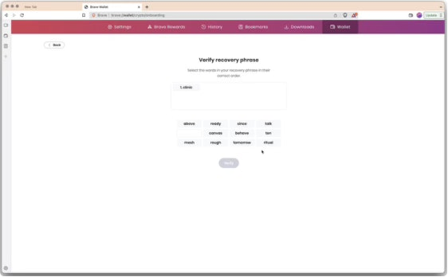
Original recovery phrase flow: generation and verification screens looked nearly identical, creating confusion at a security-critical moment.
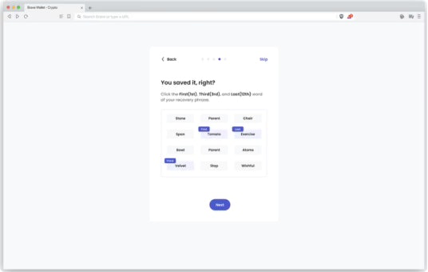
Redesigned flow: visually distinct screens, reduced verification load. Drop-off at the recovery phrase step showed statistically significant improvement post-ship.
Why this mattered
In 2022, Brave was growing its wallet product with a specific challenge: most crypto users live on exchanges like Coinbase or Binance and have never used a self-custody Web3 wallet. Moving users from exchange to wallet means introducing concepts that have no real-world analogue — and getting them wrong isn't just confusing, it's consequential.
A recovery phrase — also called a seed phrase — is a 12-word sequence that is the only way to recover a wallet if a device is lost or reset. If a user loses it, their assets are gone permanently. If they misunderstand what it is during onboarding, they may not protect it. This made the seed phrase step the highest-stakes moment in the entire onboarding flow — and the most important one to get right for both retention and user safety.
Scoping the study with stakeholders — before writing a single objective
Before defining research objectives, I ran a stakeholder alignment session with the product manager and designer. Rather than receiving a brief, I actively drew out where they believed the highest risks and challenges for users would be — asking them to surface their own assumptions and concerns about the onboarding flow.
This surfaced two distinct risk areas the team was uncertain about, which became the direct basis for the research objectives:
Where does the onboarding flow create unnecessary friction — steps that feel confusing, slow, or unclear regardless of Web3 experience?
How well do novice users actually understand what they're doing during onboarding — especially around concepts like the recovery phrase that have no everyday equivalent?
The seed phrase was named explicitly in that conversation as the step most likely to cause both friction and comprehension failure. That alignment meant the study was focused on the highest-risk steps before a single test was run — not discovered after the fact.
Study design
I recruited across two novice segments — users new to Web3 wallets but aware of them, and crypto exchange users with no Web3 wallet experience at all. This distinction mattered: exchange users represent Brave's most valuable growth opportunity, and their onboarding experience is meaningfully different from someone who's heard of seed phrases before.
I chose unmoderated testing specifically to reduce the Hawthorne effect — the well-documented tendency for participants to behave differently when observed. For a test that relied on natural reactions to confusing steps, eliminating researcher presence was more important than being able to ask follow-up questions in the moment. Think-aloud protocol captured the reasoning behind each action without requiring a moderator.
Alongside the usability sessions, I partnered with data engineers to instrument anonymous analytics around the onboarding funnel — tracking exactly which steps users dropped off at. This gave us a quantitative baseline before any design changes, and a measurement layer for after.
Unmoderated usability testing on Userlytics (n=5, novice Web3 users). Two recruiting segments: Web3-aware novices (1 or no wallets) and crypto exchange users (no Web3 wallet). Think-aloud protocol throughout. Funnel analysis on anonymised analytics data instrumented with data engineering. Post-ship analysis used Chi-Square Test on ordinal drop-off data to measure statistical significance of design changes.
What we found — four friction points, one critical
Findings were shared with the designer and PM in a review session before wider distribution — giving them space to discuss implications and challenge interpretations before decisions were made.
Requirements weren't surfaced until a user submitted a non-compliant password. Participants repeatedly missed criteria they couldn't see, creating a frustrating trial-and-error loop at the very first step.
Interactive real-time criteria indicatorThe two screens served opposite purposes: one shows your phrase to copy, the other asks you to confirm it. But visually they were nearly the same. Participants consistently lost their place — unsure whether they were still reading or now being tested. For a step with permanent consequences if done incorrectly, this was the most serious finding.
Visually distinct screens + reduced verification loadMemorizing and re-entering all 12 words in exact order is genuinely hard. Time-on-task data showed participants spending far longer than expected on this step — not because of design confusion alone, but because the task itself was too demanding for first-time users without crypto experience.
Verify 3 of 12 words, reducing load without sacrificing security intentAfter completing onboarding, users were dropped into the portfolio page with no confirmation of completion. Novice users — already uncertain about what they'd just done — had no signal that onboarding was finished and the wallet was ready to use.
Welcome state with explicit completion confirmationFrom findings to solutions — wireframing the seed phrase fix
Rather than handing design a list of problems, I produced wireframe explorations across two distinct solution directions for the most critical finding — the seed generation and verification confusion. This gave the design team concrete options with different trade-offs to evaluate, rather than open-ended feedback to interpret.
Original design — the problem
Generation and verification screens share the same visual structure. A user who loses context mid-flow cannot tell which step they're on.
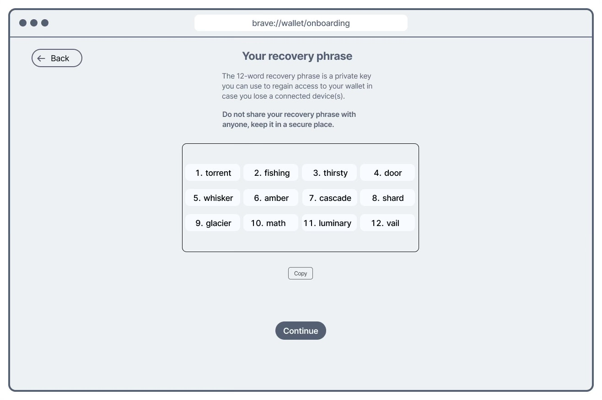
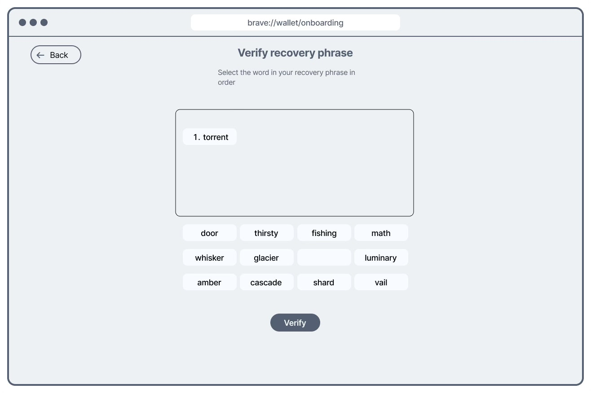
Solution 1 — Visual differentiation via dysmorphic seed display
The generation screen presents the seed in a visually distinct shape — immediately recognisable as different from the verification screen, which retains the fill-in format. Addresses the confusion problem without changing the task load.
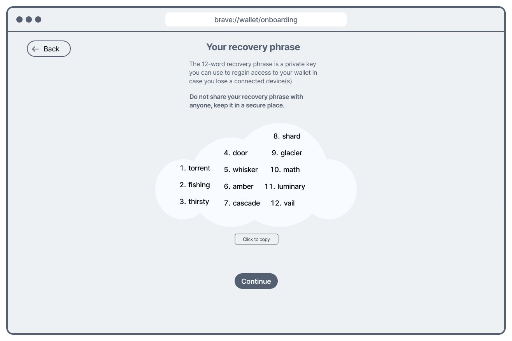
Solution 2 — Reduced verification load (3 of 12 words)
Instead of verifying all 12 words in order, users confirm 3 randomly selected words. Simultaneously differentiates the two screens and dramatically reduces cognitive load — addressing findings 02 and 03 in a single design decision.
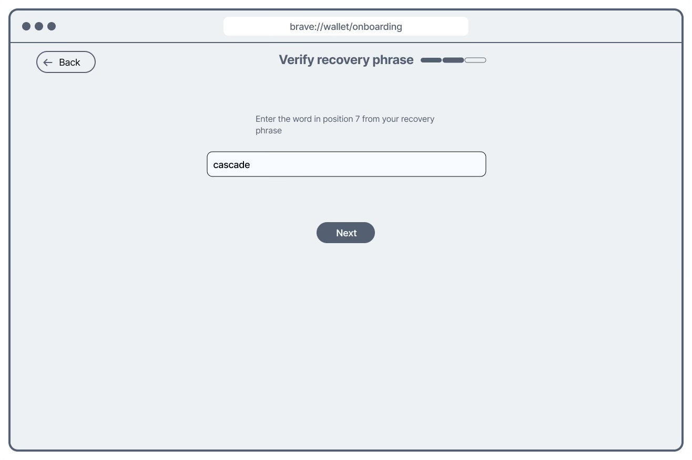
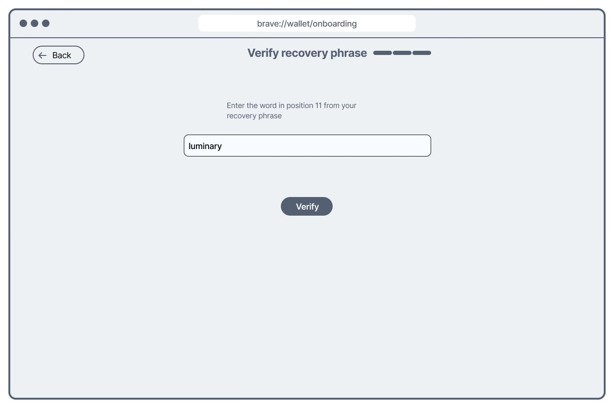
Solution 2 was the stronger strategic choice: it solved two problems simultaneously — screen differentiation and cognitive overload — without adding design complexity. The team aligned on this direction after reviewing both options against the research findings.
Design changes that shipped
After reviewing both wireframe directions with the designer and PM, the team finalized three sets of design changes — each mapped directly to a research finding.
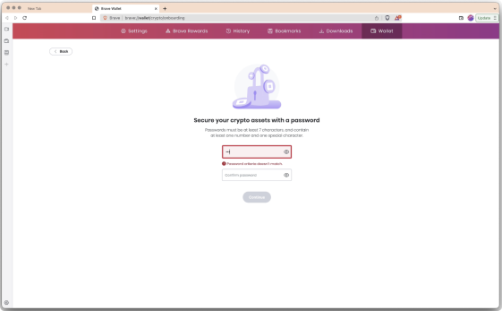
Static criteria — only visible after a failed attempt.
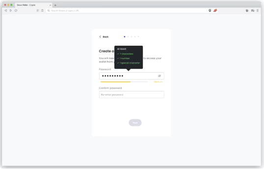
Interactive real-time indicator — criteria visible and updating as the user types. Addresses finding 01.
Visually identical generation and verification screens.
Visually distinct screens + 3-word verification — differentiates the steps and reduces cognitive load simultaneously. Addresses findings 02 and 03.
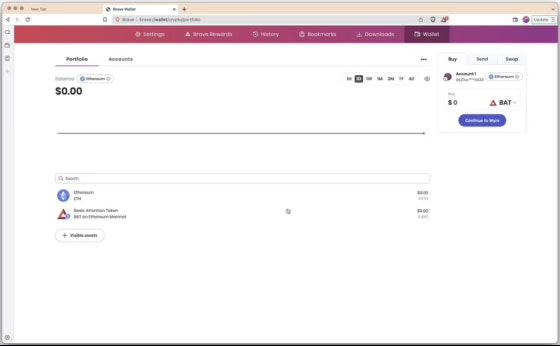
Abrupt transition to portfolio with no completion signal.
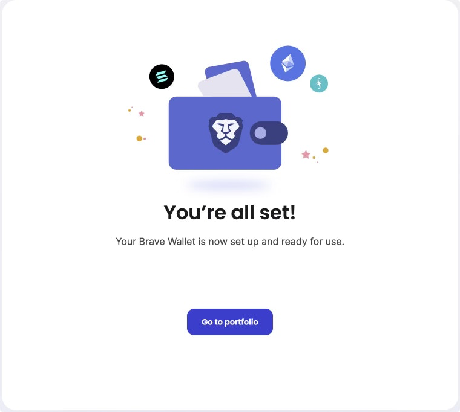
Welcome state with completion confirmation — users know onboarding is done and the wallet is ready. Addresses finding 04.
Closing the loop — post-ship validation
Shipping design changes is not the end of the research job. I ran two post-ship studies to confirm the changes worked in the wild, not just in a controlled test environment.
Re-ran the usability study on the redesigned onboarding
Improvements were observed across the friction points identified in the original study — participants moved through the seed phrase flow with less confusion and shorter time-on-task
Drop-off rate at the recovery phrase step showed statistically significant improvement
Once sufficient analytics data had accumulated on the new design, I ran a Chi-Square Test on the drop-off data. The change to the recovery phrase step was statistically significant — connecting the usability finding directly to a measurable onboarding outcome
Looking back
The most important structural decision in this project was instrumenting analytics before the study ran, not after. Partnering with data engineers to set up onboarding funnel tracking early meant we had a quantitative baseline to measure against — turning a qualitative usability study into a program with a measurable before-and-after. Without that, the post-ship Chi-Square analysis wouldn't have been possible.
The wireframing step was also deliberate. Handing design a findings document and waiting for them to interpret it adds a translation layer that often loses nuance. Producing two concrete wireframe directions — with the trade-offs of each made explicit — shortened the path from insight to shipped design and kept the research rationale visible throughout the design process.
Given more resources, I'd have increased sample size to enable statistical comparison of perceived security across the two design versions — an important dimension for a wallet product where user trust is as critical as usability.
Project timeline — from stakeholder scoping to post-ship analytics validation.